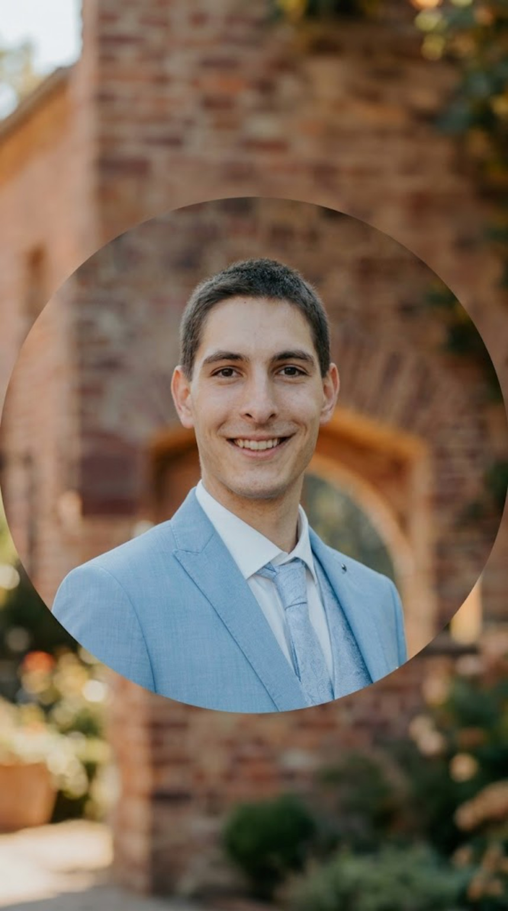

Persönliche Website
Diese Seite befindet sich im Aufbau. Inhalte werden schrittweise ergänzt.

Willkommen auf meiner Website, einem lebenden Projekt!
Ich bin Andreas Duschik, Bundesbanker, Volleyballer, Zufriedenheitsenthusiast, Sportmasseur und vieles mehr. Vor allem bin ich aber neugierig und probiere gerne Sachen aus. Daher auch diese Vibe-gecodete Website :)
Bestehendes Projekt. Entwicklung einer umfassenden Mindmap rund um das Thema Zufriedenheit. Klicken zum Öffnen.
Dürfte ich eigentlich gar nicht groß an die Glocke hängen, so grottig, wie die Videos sind. Na ja, was soll's. Vielleicht habe ich ja irgendwann mal wieder Lust eins aufzunehmen...
Eines meiner Hobbies ist es, der Verspannung den Kampf anzusagen. Schon Ende September 2025 habe ich daher eine Fortbildung zum Sportmasseur abgeschlossen. Seitdem biete ich kostenlose Rückenmassagen an. Falls wir uns kennen und du zufälligerweise in Frankfurt wohnst, könnten vllt. die Infos in der verlinkten WhatsApp-Gruppe für dich interessant sein. Ich meine, wer kann schon Nein zu einer kostenlosen Massage sagen?!
Eine Auswahl meiner akademischen Arbeiten und Veröffentlichungen.
Niemand mag steigende Preise. Zentralbanken weltweit verfolgen erstaunlich häufig ein Ziel von 2 % Inflation. Aber warum eigentlich? Warum nicht 0 % oder 3 %? In meiner Bachelorarbeit bin ich genau dieser Frage auf den Grund gegangen.
Künstliche Intelligenz war 2023 schon in aller Munde. Viele Unternehmen bemühen sich um die Umsetzung entsprechender Projekte. Die Publikation, die in Zusammenarbeit mit einem meiner Hochschulprofessoren aus einer meiner Hausarbeiten entstanden ist, beschäftigt sich hauptsächlich mit der Frage nach spezifischen Herausforderungen und Gründen für das Scheitern solcher Projekte sowie möglichen Ansatzpunkten für Verbesserung.
Im Rahmen meiner Arbeit im Policy Bereich des Zahlungsverkehrs bei der Deutschen Bundesbank durfte ich mit tollen Kolleginnen und Kollegen die 2025er Studie zum Zahlungsverhalten in Deutschland publizieren. Darin wird den Zahlgewohnheiten der Deutschen ordentlich auf den Zahn gefühlt.